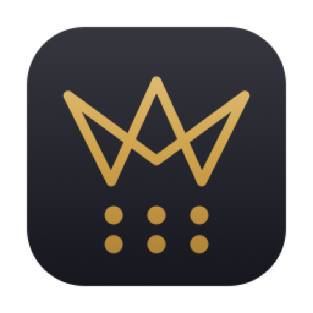

arm64
это ваш Mac
Apple Silicon
Маки с чипом M1, M2, M3, M4 — почти всё, что куплено с конца 2020 года.
macOS 11 Big Sur и новее
Скачать сборку
DMG · 4,4 МБ
Рабочий телефон для Mac. Ваш Mac — .
Приложение одно, выпусков два: под процессоры Apple и под Intel. Если не знаете, какой у вас, — меню Apple в углу экрана, «Об этом Mac», строка «Чип» или «Процессор».
Маки с чипом M1, M2, M3, M4 — почти всё, что куплено с конца 2020 года.
macOS 11 Big Sur и новее
Маки с процессором Intel Core i5, i7, i9 — до перехода на чипы Apple.
macOS 10.15 Catalina и новее
EliteSIP собран под нашу АТС и под то, как в конторе разговаривают. Это обычное приложение macOS, написанное на Swift, — не сайт в окне и не Electron. Оно занимает четыре мегабайта, запускается мгновенно и работает на маках, которым шесть лет.
Ставится один раз. Дальше настройки приезжают из техподдержки сами, а обновления приложение предлагает само — и никогда посреди разговора.

До трёх разговоров одновременно. Переключение одним нажатием, ни один не теряется и не сбрасывается молча.
Слепой — отдать сразу. С консультацией — сначала поговорить с коллегой и убедиться, что он берёт.
Свести двух собеседников и себя в один разговор.
Удержание без потери линии. Тональный набор в разговоре — для голосовых меню, добавочных и кодов.
Кто звонил, когда, сколько длился разговор и чем закончился. С поиском.
Штатная запись АТС, включается и выключается из приложения.
Проверка звука и связи внутри приложения: устройства, форматы, регистрация. Чтобы «меня не слышно» перестало быть загадкой.
Своя ручка микрофона и своя громкость собеседника — тише делается звонок, а не вся машина.
Приложение раз в полчаса заглядывает в канал обновлений. Если вышел новый выпуск, оно предложит обновиться: «Обновить» или «Отложить». Отложить можно сколько угодно раз — никто не выключит вам телефон посреди рабочего дня.
Предложение не приходит во время разговора. Само обновление проверяется подписью: подменённый файл приложение не поставит.
Нет. Каждый выпуск подписан сертификатом Apple Developer ID и нотарифицирован Apple — и тот, что вы скачиваете здесь, и тот, что приезжает обновлением. Билет вшит в файл, поэтому проверка проходит даже без интернета.
Три шага. Дольше всего — ждать ключ, остальное занимает минуту.
Один выпуск, две сборки из одного кода. Обе подписаны и нотарифицированы.
| Что | Apple Silicon | Intel |
|---|---|---|
| Версия | 0.1.34 · сборка 38 | 0.1.34 · сборка 38 |
| Архитектура | arm64 | x86_64 |
| Система | macOS 11.0+ | macOS 10.15+ |
| Образ | DMG · 4,4 МБ | DMG · 4,8 МБ |
| Подпись | Developer ID Application: Evgenii Korolkov (AKH3FW2JK6) | |
| Нотарификация | Apple, билет прикреплён | |
| Язык | русский, английский | |
Ниже — обе. Та, что подходит вашему Mac, отмечена наверху страницы.